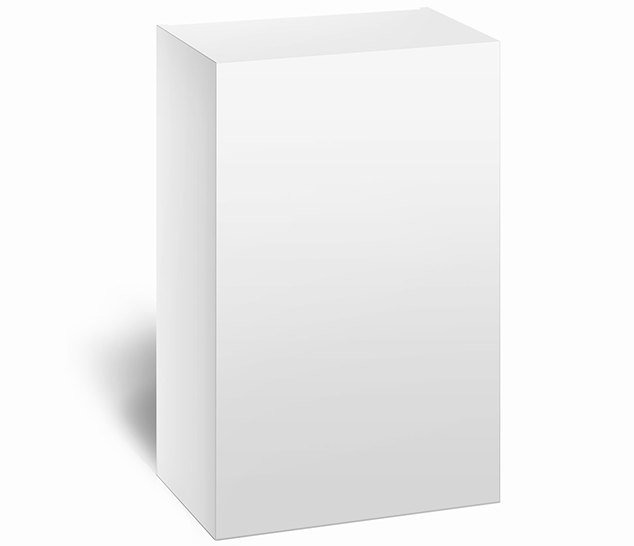

Redzes apmāns: pasaules farmkompānijas bendē mūsu acis
Redzes traucējumi ir viena no izplatītākajām problēmām pasaulē. Situācija pasliktinās ar katru gadu. PVO zinātnieki, analizējot dinamiku, secināja, ka līdz 2050. gadam katrs 2. cilvēks būs tuvredzīgs. Tas ir tieši saistīts ar mūsdienu dzīvesveidu un ekoloģisko situāciju. Speciālisti no International Council of Ophthalmology (ICO) vairāk nekā 15 gadus nodarbojās ar šo jautājumu. Un izdarīja apvērsumu medicīnas tehnoloģiju tirgū. Galvenais zinātnieku mērķis atjaunot redzi – ir izpildīts.
Mūsdienu farmakoloģiskais tirgus piedāvā plašu zāļu klāstu. Bet visi tie palīdz tikai uzturēt acu veselību, nevis uzlabot redzi. Šādu līdzekļu sastāvā ietilpst vitamīnu un minerālu komplekss, kas var mazināt spriedzi un sašaurināt asinsvadus. Nopietnāku saslimšanu ārstēšanai, kā arī redzes atjaunošanai tie nav piemēroti.
Preparāta izstrādei un testēšanai zinātniekiem pagāja piecpadsmit gadu. Pēdējā ingredientu integrācija parādīja vispozitīvākos rezultātus. No 3000 cilvēkiem ar dažādiem redzes traucējumiem, 98,7% par vienu lietošanas kursu atjaunojās gaismas jūtīgums. Tāpat, salīdzinot ar citām zālēm, īsā laika periodā nostiprina tīklenes un asinsvadu šūnu struktūru. Ārstēšanas procesā, normalizējas varavīksnene un uzlabojas redze. Neviens no agrāk zināmajiem preparātiem redzes korekcijai nav apveltīts ar līdzīgu efektu.
Pēc jaunā preparāta prezentācijas, aptieku bizness jau pirmajā ceturksnī cieta vairāku miljardu dolāru zaudējumus. Cenšoties izspiest no tirgus – farmkompānijas cieta neveiksmi. Ārstniecības līdzekļu ražošanas uzņēmumi izveidoja daudz neefektīvu dženēriķu. Lai būtu uzskatāmāk, parādīsim salīdzinošo tabulu:

|
Dženēriķis ar aktīvo vielu no Alkaloīdu grupas*  |
|
| Iedarbība |
|
|
|
Sastāvs |
|
Augu vai sintētiskas izcelsmes organiskie savienojumi |
|
Darbības princips |
|
Ietekme uz tīkleni īslaicīgi samazina acu saspringumu |
|
Iespējamās blakusparādības un kontrindikācijas |
|
|
|
Indikācijas |
|
|
* Alkaloīdi ir augu vai sintētiskas izcelsmes organisko savienojumu grupa, no kuriem lielākajai daļai ir vāji izteiktas aktīvās īpašības.
Jaunā preparāta efektivitāte ir pierādīta ar daudzu gadu klīniskajiem pētījumiem. Pa vienu kursu palīdz uzlabot redzes asumu un redzes lauku, samazinot noguruma sajūtu, sausumu un mušiņas. Analogi šādas iespējas nenodrošina, jo tie attiecas uz vispārspēcinošiem līdzekļiem, salīdzināmiem ar vitamīniem.
Ārstniecības līdzekļu rūpniecībai ekonomiski neizdevīgi laist tirgū . Farmkompānijas visādi cenšas novērst to izplatību. Bet jaunais preparāts redzes uzlabošanai saņēma visus kvalitātes sertifikātus. Nākotnē tas dos kvotu brīvai pārdošanai aptieku tīklos. Šobrīd ražotāji ir uzsākuši preparāta realizāciju par minimālu cenu savā oficiālajā tīmekļa vietnē.
Paldies jums liels par patiesību! Kā gan apnikuši visi šie sīkumainie cilvēki, kas domā tikai par savu peļņu. Es nedomāju, ka viņi kļūtu stipri nabagāki. Un ir vērts padomāt, cik daudz miljardu cilvēku varētu noņemt brilles, ja preparātam netraucētu iziet pasaules tirgū. Varbūt jau zāles pret vēzi ir izgudrotas, bet to arī nelaiž!
Pilnīgi piekrītu komentāram augstāk! Es personīgi jau esmu noguris no tā, kā mums bloķē gaisu...
Es biju preparāta eksperimentālajā grupā. Kad bija pētījums, tad tur bija vairākas grupas ar dažādām problēmām. Personīgi man bija progresējošs astigmātisms. Redze kritās ļoti ātri. Sākot lietot , es gandrīz uzreiz sajutu uzlabojumus. Eksperiments ilga pusgadu, es divas reizes uzlaboju savus rādītājus. Dzirdēju, ka kādam problēmas ar redzi izzuda mēneša laikā, bet tur arī citas diagnozes bija, tas man bija diezgan nopietna. Galu galā, divu gadu laikā es noņēmu brilles un mana redze ir pilnībā atjaunojās.
Es esmu tik priecīga, ka atradu šo rakstu! Ceru, ka mana dzīve mainīsies uz labo pusi un es beidzot varēšu skatīties uz pasauli bez brillēm.
Noteikti varēsiet! Es pati pārstāju valkāt brilles pēc tam, kad izgāju ārstēšanas kursu ar .
Es arī pasūtīju savai mammai. Dzer jau nedēļu, saka, ka spiediens acīs kļuvis mazāks.
Man arī vajag tādu pasūtīt, pēdējā laikā visai manai ģimenei parādījās problēmas ar redzi.
Es vairs neceru, ka varēšu noņemt brilles, jo man bija 2 operācijas. Es ļoti baidos, ka kļūšu pilnīgi akla, jo mana redze ar katru dienu kļūst arvien sliktāka un sliktāka. Es zinu ļoti daudz stāstu, kad cilvēki pamostas un vienkārši pārstāj redzēt... Ceru, ka arī man palīdzēs , tā kā es jau esmu izmēģinājusi visu, ko varēju!
Nezaudējiet ticību un jums noteikti viss izdosies!
Es pēc sevis to zinu, kad pamosties un baidies atvērt acis. Un ja nu tu neko neredzēsi? Pirms gada man atklāja acs tīklenes noslāņošanos. Operācijas veica savlaicīgi, lai apturētu procesu un izgrieza cistas. Bet rehabilitācija bija neveiksmīga, un man arvien vairāk un vairāk parādās mušiņas acī. Ārsts teica, ka ir nepieciešams steidzami atjaunot pigmentu un baltumu un ir izrakstīja . Man bail padomāt, ka varētu trāpīties ārsts, kuru nopirkuši tirgotāji un izrakstīt kādu citu līdzekli, kas nepalīdzētu. Bet esmu pateicīga gan ārstam, gan , ka palīdzēja man. Tagad man ir normāla redze. Es staigāju un pat lasu bez brillēm, un visas manas mušiņas acu priekšā pazuda.